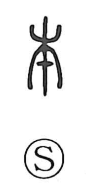

本

Kun: moto | On: hon
root ・ origin ・ basis ・ book
Explanation
本 is 木, a tree, with an extra mark drawing attention to the base of its trunk. In the older forms the added mark can be a thick dot; the modern horizontal stroke performs the same pointing function. It identifies the root or foundation.
Marking the upper part of the tree produces 末, the tip or end. 本 and 末 thus distinguish the two ends of one visible form.
A root is where growth begins and what supports it, giving 本 the senses ‘origin,’ ‘beginning,’ ‘basis,’ and ‘essential part.’ It can also indicate what is original or properly belongs to something. The use for a book or written text is a later meaning of the character.